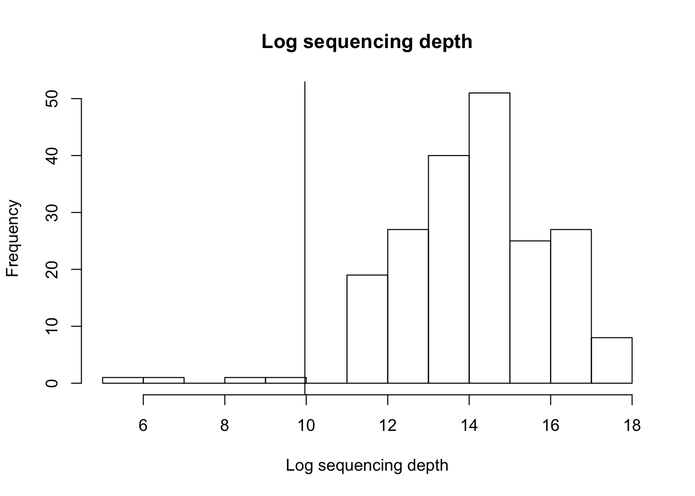

Warning in as.POSIXlt.POSIXct(Sys.time()): unknown timezone 'zone/tz/2017c.
1.0/zoneinfo/America/Chicago'Last updated: 2017-12-21
Code version: 0c0400c
We excluded samples and OTUs based on the following criteria:
Prior to filtering, there are 42,999 features and 201 samples
After Step 1, left with 42,982 features and 197 samples.
After Step 2, left with 5,521 features and 197 samples.
After Step 3, left with 4,423 features and 197 samples
In the end, 4 samples/patients were excluded from the analysis. See the bottom of this page for sample demographics.
\(~\)
Questions:
Maybe included one patient that has ~900 total reads?
Difference between treatment and control demographics before/after excluded these samples?
library(metagenomeSeq)MRobj = readRDS("../data/nasal.rds")
MRobjMRexperiment (storageMode: environment)
assayData: 42999 features, 201 samples
element names: counts
protocolData: none
phenoData
sampleNames: EM0042 EM0047 ... E0168 (201 total)
varLabels: StudyID age ... infnone (94 total)
varMetadata: labelDescription
featureData
featureNames: denovo0 denovo1 ... denovo42998 (42999 total)
fvarLabels: Kingdom Phylum ... Species (7 total)
fvarMetadata: labelDescription
experimentData: use 'experimentData(object)'
Annotation: \(~\)
Filter out samples with total count < 1000.
Filter out OTUs with total count across samples < 1. In other words, present in at least one sample.
hist(log2(colSums(MRobj)),xlab="Log sequencing depth",
main = "Log sequencing depth")
abline(v=log2(1000))
MRobj = filterData(MRobj, depth=1000, present=1)
MRobjMRexperiment (storageMode: environment)
assayData: 42982 features, 197 samples
element names: counts
protocolData: none
phenoData
sampleNames: EM0042 EM0047 ... E0168 (197 total)
varLabels: StudyID age ... infnone (94 total)
varMetadata: labelDescription
featureData
featureNames: denovo0 denovo1 ... denovo42998 (42982 total)
fvarLabels: Kingdom Phylum ... Species (7 total)
fvarMetadata: labelDescription
experimentData: use 'experimentData(object)'
Annotation: \(~\)
OTUs present (> 0 read) in 5 or more samples
OTUs that are quantified with > 20 reads in at least one sample
nmat = MRcounts(MRobj)
keep = which( rowSums(nmat>0)>=5 | rowSums(nmat>=20)>0 )
MRobj=MRobj[keep,]After filtering, we have 5,521 features and 197 samples.
MRobjMRexperiment (storageMode: environment)
assayData: 5521 features, 197 samples
element names: counts
protocolData: none
phenoData
sampleNames: EM0042 EM0047 ... E0168 (197 total)
varLabels: StudyID age ... infnone (94 total)
varMetadata: labelDescription
featureData
featureNames: denovo2 denovo6 ... denovo42992 (5521 total)
fvarLabels: Kingdom Phylum ... Species (7 total)
fvarMetadata: labelDescription
experimentData: use 'experimentData(object)'
Annotation: Number of unique organisms we find within each clade. PS. 2 at the Kindom level due to the unassigned
sapply(fData(MRobj),function(i)length(unique(i)))Kingdom Phylum Class Order Family Genus Species
2 34 79 153 300 544 617 Number of features unassigned at the Kindom level. (1,098 out of total 5521 OTUs)
length(which(fData(MRobj)[,1]=="Unassigned"))[1] 1098Filtering Unassigned.
MRobj = MRobj[- which(fData(MRobj)[,1]=="Unassigned"),]
saveRDS(MRobj,file="../data/nasal_filtered.rds")After filtering, we have 4,423 features and 197 samples.
MRobjMRexperiment (storageMode: environment)
assayData: 4423 features, 197 samples
element names: counts
protocolData: none
phenoData
sampleNames: EM0042 EM0047 ... E0168 (197 total)
varLabels: StudyID age ... infnone (94 total)
varMetadata: labelDescription
featureData
featureNames: denovo6 denovo17 ... denovo42992 (4423 total)
fvarLabels: Kingdom Phylum ... Species (7 total)
fvarMetadata: labelDescription
experimentData: use 'experimentData(object)'
Annotation: 4 samples were excluded from the filtered data: EM0062, E0194, EM0088, EM0053.
pre_filtered <- readRDS("../data/nasal.rds")
post_filtered <- readRDS("../data/nasal_filtered.rds")
excluded_samples <- setdiff(colnames(MRcounts(pre_filtered)), colnames(MRcounts(post_filtered)))
excluded_samples[1] "EM0062" "E0194" "EM0088" "EM0053"colSums(MRcounts(pre_filtered))[colnames(pre_filtered) %in% c("EM0062", "E0194", "EM0088", "EM0053")]EM0062 E0194 EM0088 EM0053
104 934 271 36 Phenotypes of the 4 excluded samples.
EM0062
Demographics: age 66, male, white, underwent cardiac surgery, studysite = 1, seqrun = 2
Primary outcome: anyinf6m (infection 6 mo. post surgery) = 1, naswabsa1 (nasal swab culture positive) = 1
pData(pre_filtered)[rownames(pData(pre_filtered)) == "EM0062",] StudyID age gender race srgtpop htprop wtprop bmiprop ster3prop
EM0062 EM0062 66 0 0 1 180.3 114 35.1 0
cadprop chfdgprop htnprop cholprop dbprop smokcuprop cvdprop
EM0062 1 1 1 0 1 0 0
padprop lungdisprop asthmaprop dialprop cancerprop obesity
EM0062 0 0 0 0 1 1
creatprop bunprop hgbprop hctprop wbcprop plateprop wbc hgb hct
EM0062 0.91 17 13.7 39.9 6600 237 6400 15.7 46.9
plate ssi ssidepth SSIorg1 SSIorg2 SSIorg3 infdeath cardsrgsc
EM0062 191 1 deep none <NA> <NA> 0 1
cransrgsc spinsrgsc vascsrgsc anyinf30 anyinf6m death6m ssideep6m
EM0062 0 0 0 1 1 0 1
bloodinf6m pneumon6m naswabtp studysite DateExtracted seqrun
EM0062 0 0 3 1 2014-05-12 2
infabprop miprop smokprprop ulcerprop liverprop readm_30d maristat3
EM0062 0 0 1 0 0 1 1
naswabsa1 naswabmrsa1 insurstat3 CharlCA Charlcat educat4
EM0062 1 0 2 0 1 1
nonsysester1prop bronmedprop lungdz medincome hosprop asa CharlF
EM0062 0 0 0 56221 1 4 2
COPD h2blockprop skinev1prop nasalster antihist allergies outinop
EM0062 0 1 0 0 0 0 1
dtop ssideepsepi ssideepSA ssideepStaph ssideepstrep
EM0062 09/04/2009 0 0 0 0
ssideeppseudo ssideepentero ssideepnone infSepi infSA infStaph
EM0062 0 0 1 0 0 0
infStrep infpseudo infEntero infnone
EM0062 0 0 0 1\(~\)
E0194
Demographics: age 66, male, white, underwent cardiac surgery, study site = 0, seqrun = 2
Primary outcome: anyinf6m (infection 6 mo. post surgery) = 0, naswabsa1 (nasal swab culture positive) = 0
pData(pre_filtered)[rownames(pData(pre_filtered)) == "E0194",] StudyID age gender race srgtpop htprop wtprop bmiprop ster3prop
E0194 E0194 66 0 0 1 165 88 32.3 0
cadprop chfdgprop htnprop cholprop dbprop smokcuprop cvdprop padprop
E0194 1 0 1 1 0 0 0 0
lungdisprop asthmaprop dialprop cancerprop obesity creatprop bunprop
E0194 0 0 1 0 1 4.9 28
hgbprop hctprop wbcprop plateprop wbc hgb hct plate ssi ssidepth
E0194 8.8 28.4 3170 207 2600 8.1 25.6 201 0 <NA>
SSIorg1 SSIorg2 SSIorg3 infdeath cardsrgsc cransrgsc spinsrgsc
E0194 <NA> <NA> <NA> 1 1 0 0
vascsrgsc anyinf30 anyinf6m death6m ssideep6m bloodinf6m pneumon6m
E0194 0 0 0 1 0 0 0
naswabtp studysite DateExtracted seqrun infabprop miprop smokprprop
E0194 2 0 2013-08-21 2 1 1 1
ulcerprop liverprop readm_30d maristat3 naswabsa1 naswabmrsa1
E0194 0 0 0 1 0 0
insurstat3 CharlCA Charlcat educat4 nonsysester1prop bronmedprop
E0194 1 0 3 0 0 0
lungdz medincome hosprop asa CharlF COPD h2blockprop skinev1prop
E0194 0 41580 1 4 5 0 0 1
nasalster antihist allergies outinop dtop ssideepsepi
E0194 0 0 0 2 02/20/2008 0
ssideepSA ssideepStaph ssideepstrep ssideeppseudo ssideepentero
E0194 0 0 0 0 0
ssideepnone infSepi infSA infStaph infStrep infpseudo infEntero
E0194 0 0 0 0 0 0 0
infnone
E0194 0\(~\)
EM0088
Demographics: age 74, female, white, underwent cardiac surgery, studysite = 1, seqrun = 2
Primary outcome: anyinf6m (infection 6 mo. post surgery) = 1, naswabsa1 (nasal swab culture positive) = 1
pData(pre_filtered)[rownames(pData(pre_filtered)) == "EM0088",] StudyID age gender race srgtpop htprop wtprop bmiprop ster3prop
EM0088 EM0088 74 1 0 1 160 65.4 25.5 0
cadprop chfdgprop htnprop cholprop dbprop smokcuprop cvdprop
EM0088 0 0 1 0 0 1 0
padprop lungdisprop asthmaprop dialprop cancerprop obesity
EM0088 0 0 0 0 0 0
creatprop bunprop hgbprop hctprop wbcprop plateprop wbc hgb hct
EM0088 1.73 34 12.5 36.7 6300 156 6000 12.6 36.5
plate ssi ssidepth SSIorg1 SSIorg2 SSIorg3 infdeath
EM0088 156 1 deep enterococcus bacteroides pseudomonas 0
cardsrgsc cransrgsc spinsrgsc vascsrgsc anyinf30 anyinf6m death6m
EM0088 1 0 0 0 1 1 1
ssideep6m bloodinf6m pneumon6m naswabtp studysite DateExtracted
EM0088 1 1 1 3 1 2014-05-12
seqrun infabprop miprop smokprprop ulcerprop liverprop readm_30d
EM0088 2 1 0 1 0 0 0
maristat3 naswabsa1 naswabmrsa1 insurstat3 CharlCA Charlcat educat4
EM0088 1 1 1 1 0 3 0
nonsysester1prop bronmedprop lungdz medincome hosprop asa CharlF
EM0088 0 1 1 95094 1 4 5
COPD h2blockprop skinev1prop nasalster antihist allergies outinop
EM0088 1 1 0 0 0 0 1
dtop ssideepsepi ssideepSA ssideepStaph ssideepstrep
EM0088 07/13/2011 0 0 0 1
ssideeppseudo ssideepentero ssideepnone infSepi infSA infStaph
EM0088 1 0 0 0 0 0
infStrep infpseudo infEntero infnone
EM0088 1 1 0 0\(~\)
EM0053
Demographics: age 64, male, white, underwent cardiac surgery, studysite = 1, seqrun = 2
Primary outcome: anyinf6m (infection 6 mo. post surgery) = 1, naswabsa1 (nasal swab culture positive) = 0
pData(pre_filtered)[rownames(pData(pre_filtered)) == "EM0053",] StudyID age gender race srgtpop htprop wtprop bmiprop ster3prop
EM0053 EM0053 64 0 0 1 177.8 94 29.7 0
cadprop chfdgprop htnprop cholprop dbprop smokcuprop cvdprop
EM0053 1 0 1 0 0 0 0
padprop lungdisprop asthmaprop dialprop cancerprop obesity
EM0053 0 0 0 0 0 0
creatprop bunprop hgbprop hctprop wbcprop plateprop wbc hgb hct
EM0053 1.17 8 15.5 42.4 5900 202 4200 13.7 38
plate ssi ssidepth SSIorg1 SSIorg2 SSIorg3 infdeath cardsrgsc
EM0053 5 1 deep klebsiella proteus <NA> 0 1
cransrgsc spinsrgsc vascsrgsc anyinf30 anyinf6m death6m ssideep6m
EM0053 0 0 0 1 1 0 1
bloodinf6m pneumon6m naswabtp studysite DateExtracted seqrun
EM0053 1 1 3 1 2014-05-12 2
infabprop miprop smokprprop ulcerprop liverprop readm_30d maristat3
EM0053 1 1 0 0 0 0 0
naswabsa1 naswabmrsa1 insurstat3 CharlCA Charlcat educat4
EM0053 0 0 2 0 1 1
nonsysester1prop bronmedprop lungdz medincome hosprop asa CharlF
EM0053 0 0 0 92509 0 4 1
COPD h2blockprop skinev1prop nasalster antihist allergies outinop
EM0053 0 1 1 0 0 0 1
dtop ssideepsepi ssideepSA ssideepStaph ssideepstrep
EM0053 07/14/2009 0 0 0 0
ssideeppseudo ssideepentero ssideepnone infSepi infSA infStaph
EM0053 0 1 0 0 0 0
infStrep infpseudo infEntero infnone
EM0053 0 0 1 0R version 3.4.1 (2017-06-30)
Platform: x86_64-apple-darwin15.6.0 (64-bit)
Running under: macOS High Sierra 10.13
Matrix products: default
BLAS: /Library/Frameworks/R.framework/Versions/3.4/Resources/lib/libRblas.0.dylib
LAPACK: /Library/Frameworks/R.framework/Versions/3.4/Resources/lib/libRlapack.dylib
locale:
[1] en_US.UTF-8/en_US.UTF-8/en_US.UTF-8/C/en_US.UTF-8/en_US.UTF-8
attached base packages:
[1] parallel stats graphics grDevices utils datasets methods
[8] base
other attached packages:
[1] metagenomeSeq_1.20.1 RColorBrewer_1.1-2 glmnet_2.0-13
[4] foreach_1.4.4 Matrix_1.2-12 limma_3.34.4
[7] Biobase_2.38.0 BiocGenerics_0.24.0
loaded via a namespace (and not attached):
[1] Rcpp_0.12.14 knitr_1.17 magrittr_1.5
[4] lattice_0.20-35 stringr_1.2.0 caTools_1.17.1
[7] tools_3.4.1 grid_3.4.1 KernSmooth_2.23-15
[10] git2r_0.20.0 gtools_3.5.0 htmltools_0.3.6
[13] iterators_1.0.9 matrixStats_0.52.2 yaml_2.1.16
[16] rprojroot_1.2 digest_0.6.13 bitops_1.0-6
[19] codetools_0.2-15 evaluate_0.10.1 rmarkdown_1.8
[22] gdata_2.18.0 stringi_1.1.6 compiler_3.4.1
[25] gplots_3.0.1 backports_1.1.2 This R Markdown site was created with workflowr